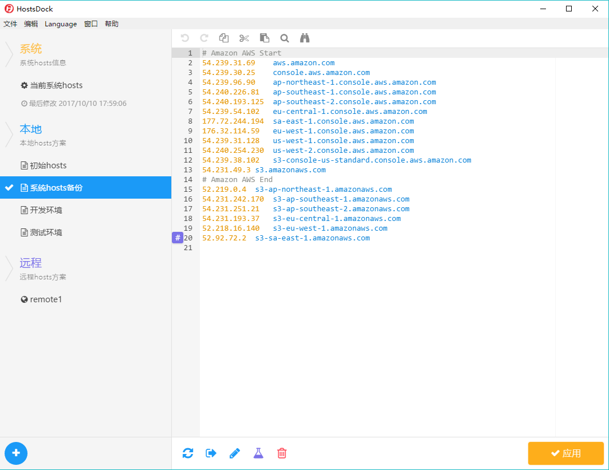

界面预览

界面预览
功能特色
支持创建本地hosts方案或者连接到远程的hosts文件。
自动识别hosts文件中的IP、域名和注释并高亮显示。
提供复制、粘贴、剪切、查找、替换、撤销等编辑功能。
点击 # 按钮或 Ctrl + / 可快速注释一行。
独创折叠语法 #region，方便地在hosts中创建可折叠的块。
支持使用ping命令对hosts中的IP进行连通性检测。
支持系统托盘及托盘菜单，可以快捷切换hosts。
支持导出选定的hosts方案，以分享给其他人。
支持主流操作系统：Windows、MacOS、Linux。